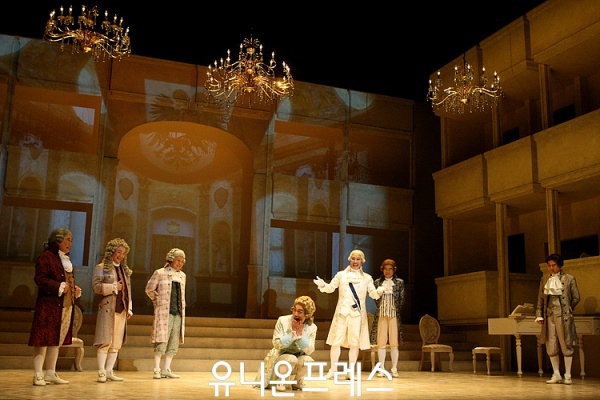

Myeongdong Theater is an exclusive theatrical performance center, which has opened in the building where the National Theater of Korea used to be located. From 1934 to 1973, the National Theater of Korea pioneered Korean arts and culture, functioning as a movie theater, performance hall and art theater. Though it closed its doors in 1975, after 3 years of renovation, the theater has been renamed and was reopened as Myeongdong Theater in June 5, 2009.
Complete interior renovations were carried out, leaving outside wall design untouched. The theatre has now been re-born as a mid-sized performance hall with state-of-the-art stage equipment and 588 seats, offering audiences a great view of the stage while the close proximity allows them to share the passion of the performers. The theater presents a range of performances such as serious plays, experimental plays, non-verbal performances, and musicals. Not only that, the place is a popular venue for diverse events like acting contests, theater festivals and performance festivals.
Myeongdong Kyoja (명동교자) is a noodle restaurant located near Myeongdong Cathedral that has been in business for about 40 years. The restaurant is known for their knife-cut, handmade kalguksu noodles, which is its main menu item. These lovingly prepared noodles are served in a deep and flavorful broth with meat and vegetables, making for a delicious meal. Also popular are the mandu (dumplings), bibim guksu (noodles with vegetables and red hot pepper paste), and kongguksu (noodles in cold soy milk broth).